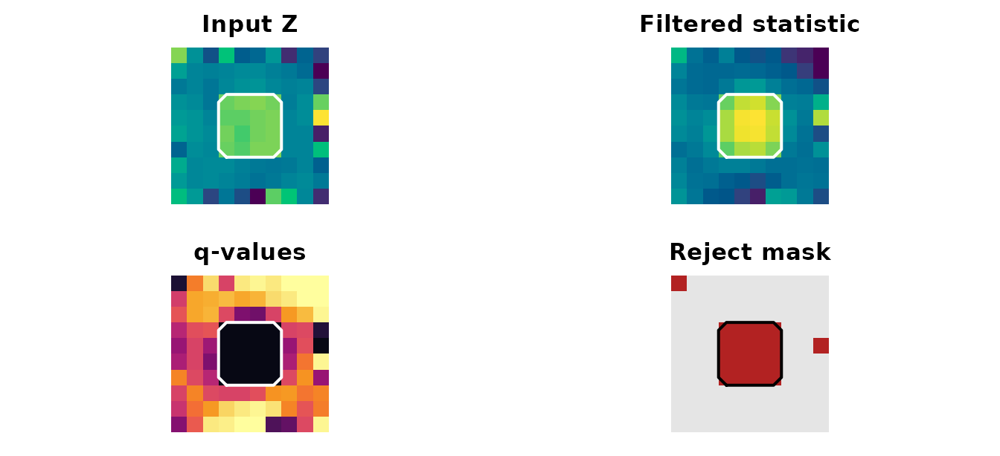
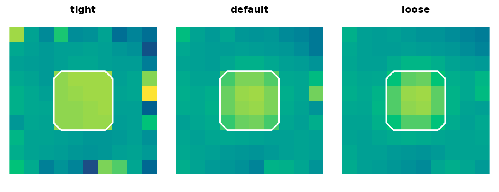

Local Adaptive Inference with LISA
Source:vignettes/lisa-local-adaptive-inference.Rmd
lisa-local-adaptive-inference.RmdVoxelwise inference is hostile to small focal effects: each voxel pays its own multiple-testing cost, and a true 2-voxel blob can sit just under the voxelwise threshold even when its neighbours quietly agree with it. Cluster and TFCE methods recover that signal by pooling over space, but they pool the same way everywhere, smoothing local detail away. LISA keeps the locality. It runs the same edge-preserving bilateral filter on the observed statistic map and on every matched null draw, then estimates voxelwise FDR in the filtered-statistic space. Voxels that align with a coherent local neighbourhood get amplified; isolated noise spikes get attenuated; the FDR target is honoured because the null is filtered the same way.
This vignette teaches the full LISA pipeline on a tiny synthetic example you can step through in seconds.
First win
Start with a 3D volume that has a small planted blob. Build a null
spec from permuted maps, build a filter, call lisa() — the
q-value map and rejection mask come back in a single
neurothresh_result.
ns <- null_from_maps(z, nulls)
filt <- lisa_bilateral(radius = 1, n_iter = 1, boundary = "mask_normalized")
fit <- lisa(stat_vol = ns$stat_vol, mask = ns$mask, null_spec = ns,
filter = filt, backend = "reference",
tail = "pos", q = 0.10)
fit
#> <neurothresh_result>
#> method : lisa
#> q : 0.1
#> tail : pos
#> threshold: 4.604
#> rejected : 72 / 1000 voxels (7.20%)
Mid-axial slice of the planted-blob example: input Z, filtered statistic, q-value map, and the LISA rejection mask.
The blob lights up in the filtered map (smoother peak), survives at q ≤ 0.10, and the rejection mask localises it without bleeding far outside its true support.
The mental model
LISA has four objects you compose:
| Object | Built by | Role |
|---|---|---|
neurothresh_null_spec |
null_from_maps(),
null_one_sample(), null_two_sample(),
null_glm(), … |
Bundles the observed map, mask, and a deterministic-by-index draw function |
neurothresh_lisa_filter |
lisa_bilateral() |
Specifies radius, range/space sigmas, boundary handling, iterations |
| inference call | lisa(stat_vol, mask, null_spec, filter, ...) |
Filters the observed map and every null draw, then runs FDR in filtered space |
neurothresh_result |
returned by lisa()
|
Method-tagged object with pvals
(q-values), reject, and
extras$filtered_stat
|
The pipeline is always the same shape: build inputs → build a
null spec → build a filter → call lisa() → inspect the
result. The wrappers lisa_onesample(),
lisa_twosample(), and lisa_glm() chain steps
1–3 for common designs.
Tuning the bilateral filter
The filter has two scales:
-
sigma_spacecontrols how far in physical neighbourhood the filter averages — bigger σ pools across more voxels. -
sigma_rangecontrols how much statistic disagreement is tolerated — bigger σ pools across more value differences (less edge-preserving).
radius caps the neighbourhood at ±r voxels.
n_iter > 1 re-applies the filter, sharpening edges.
boundary = "mask_normalized" re-weights at the mask border
so edge voxels are not dragged toward zero.
filters <- list(
tight = lisa_bilateral(radius = 1, sigma_space = 0.7, sigma_range = 1,
n_iter = 1, boundary = "mask_normalized"),
default = lisa_bilateral(radius = 1, n_iter = 1, boundary = "mask_normalized"),
loose = lisa_bilateral(radius = 1, sigma_space = 1.5, sigma_range = 4,
n_iter = 1, boundary = "mask_normalized")
)
filtered <- lapply(filters, function(f) {
fit_f <- lisa(stat_vol = ns$stat_vol, mask = ns$mask, null_spec = ns,
filter = f, backend = "reference", tail = "pos", q = 0.10)
as.numeric(lisa_filtered_stat(fit_f))
})
A tight filter behaves close to voxelwise inference: it preserves edges but pools little. A loose filter behaves more like cluster inference: the blob spreads into a soft halo. The default sits between them. You usually want defaults; reach for tighter settings when peaks are dense and edges matter, looser settings when effects are diffuse.
From subject maps
When you have subject-level images, the lisa_onesample()
wrapper builds the null spec for you using
null_one_sample(). The same tail,
q, filter, and backend arguments
flow through.
imgs <- replicate(8, plant_blob(make_smooth(), amp = 2.5), simplify = FALSE)
one <- lisa_onesample(
imgs,
n_perm = 24,
seed = 1,
filter = lisa_bilateral(radius = 1, n_iter = 1,
boundary = "mask_normalized"),
backend = "reference",
tail = "pos",
q = 0.20
)
one
#> <neurothresh_result>
#> method : lisa
#> q : 0.2
#> tail : pos
#> threshold: 1.166
#> rejected : 91 / 1000 voxels (9.10%)Two-group designs use lisa_twosample(imgs, group, ...).
Anything more involved — covariates, nuisance regressors,
between-subject contrasts — uses
lisa_glm(imgs, design, contrast, ...) and is the
recommended path whenever the analysis is not strictly one- or
two-sample.
External statistic maps
Use null_from_maps() when the observed map and the
permuted null maps come from a different pipeline (an MVPA searchlight,
a cluster job, a permutation saved to disk):
ns_ext <- null_from_maps(z, nulls)
fit_ext <- lisa(stat_vol = ns_ext$stat_vol, mask = ns_ext$mask,
null_spec = ns_ext,
filter = lisa_bilateral(radius = 1, n_iter = 1,
boundary = "mask_normalized"),
backend = "reference", tail = "pos", q = 0.10)
sum(fit_ext$reject)
#> [1] 72The list of permuted maps must use the same observed-map dimensions; LISA does not re-mask or re-canonicalise external inputs.
A null spec is reusable
The same null_spec can drive both LISA and other
neurothresh inference methods, so you can compare local-adaptive FDR
against, e.g., scale-space localised energy without re-permuting:
sse <- scale_space_energy(
null_spec = ns,
scales = scale_space(2, include_global = FALSE),
statistics = list(signed_coherence(tail = "two")),
n_perm = ns$n_perm
)
summary(sse)
#> scale_index channel_index scale_type fwhm_mm channel min_p
#> 1 1 1 gaussian 2 signed_coherence_two 0.01639344
#> 2 2 1 identity 0 signed_coherence_two 0.01639344
#> max_stat any_supported n_supported effective_basis
#> 1 7.440220 TRUE 77 125
#> 2 7.269869 TRUE 64 1000This is the canonical neurothresh contract in action: build the null once, spend it across whichever inference methods answer your scientific question.
Inspecting the result
fit is a standard neurothresh_result, so
the same accessors work as for every other inference method in the
package. The LISA-specific bits live under extras:
fit$threshold
#> [1] 4.603933
sum(fit$reject)
#> [1] 72
range(as.numeric(fit$pvals), finite = TRUE)
#> [1] 0.02678571 0.99928333
lambda <- lisa_filtered_stat(fit)
range(as.numeric(lambda), finite = TRUE)
#> [1] -7.873699 10.396897
names(fit$extras)
#> [1] "filtered_stat" "fdr_curve" "null_tail_counts"fit$pvals is the voxelwise q-value volume, monotone in
evidence by default. fit$reject is the rejection mask at
the supplied q. extras$filtered_stat is the
filtered observed map (the same shape as stat_vol); use
lisa_filtered_stat(fit) rather than reaching into
extras directly.
For diagnostics — sanity-checking the filter, plotting the filtered
null distribution at a voxel — pass
store_filtered_nulls = TRUE. Only do this on small runs;
the full filtered-null matrix is n_perm × sum(mask).
Backend notes
| Backend | When to use |
|---|---|
"reference" (default in tests) |
Mask-aware, slower; use for small volumes, debugging, or when boundary semantics matter |
"neuroim2" |
Adapts neuroim2::bilateral_filter();
fastest path, but uses neuroim2’s boundary convention |
"adjoin_sparse" |
Reserved; not enabled because bilateral weights are statistic-dependent and must be rebuilt per draw |
Filter weights depend on each statistic map (the bilateral kernel
uses the voxel values themselves), so there is no shared weight matrix
to amortise across draws. The cost of LISA is dominated by
n_perm filter applications; plan accordingly.
Where to go next
-
?lisa_bilateral— full filter argument reference -
?lisa— full inference signature -
vignette("scale-space-localized-energy")— the multiscale companion to LISA -
vignette("neurothresh")— the canonical pipeline shared by every inference method in the package